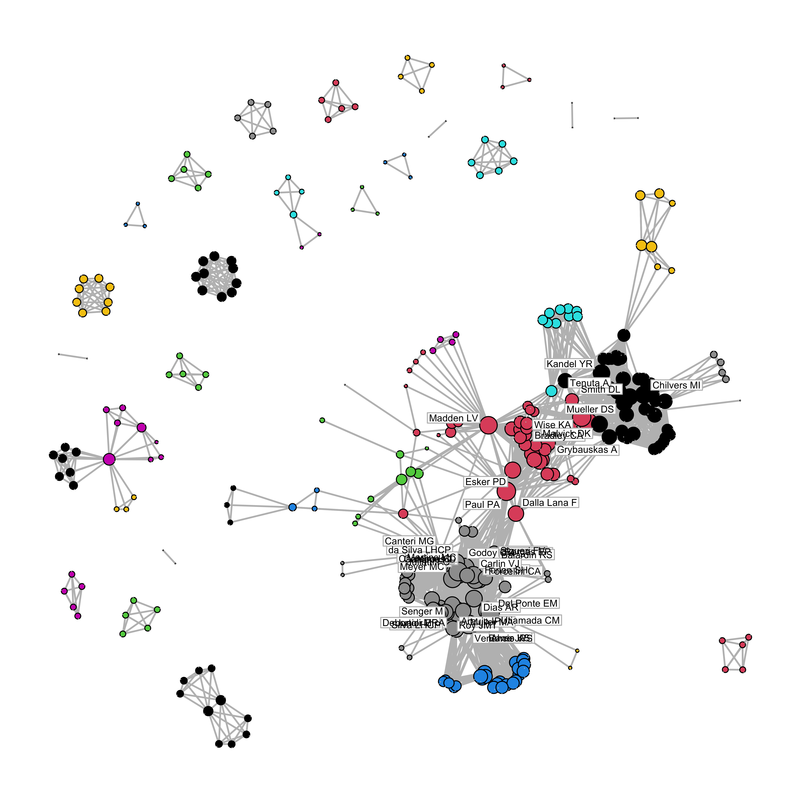
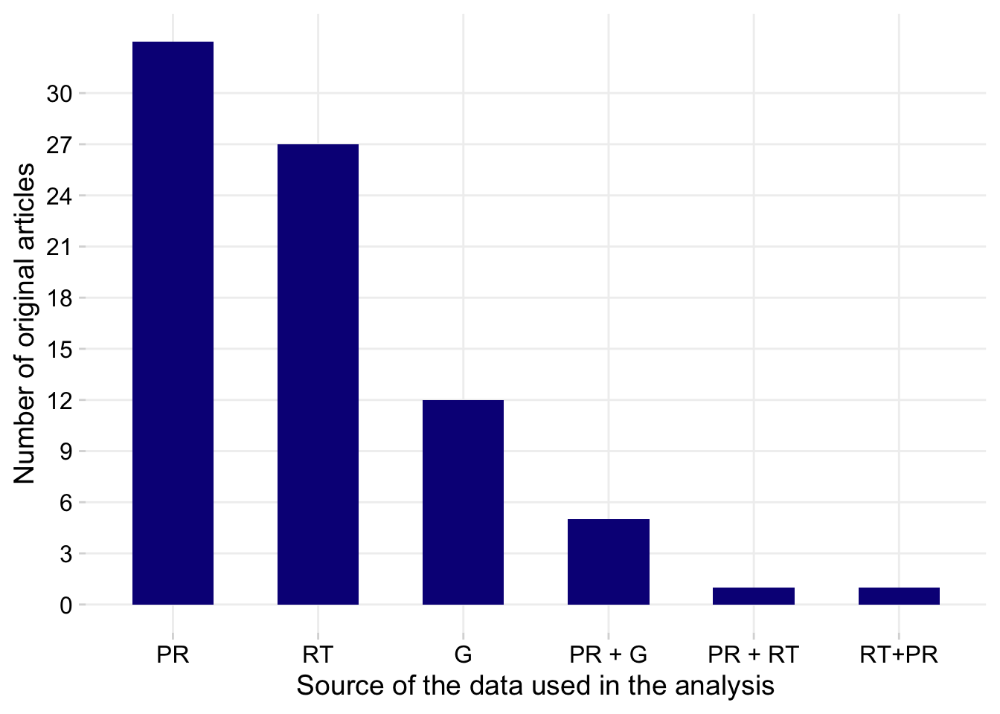

Meta-analysis in Plant Pathology
dat <- gsheet2tbl("https://docs.google.com/spreadsheets/d/1vYXB1Ag-ouLgo9nLIelP1V0hz-ki0f7p-aOCAkmuxKI/edit#gid=1058316481")
theme_set(theme_minimal_grid())Bibliographic info
Total number of pubs
nrow(dat)[1] 85dat |>
tabyl(article_type) article_type n percent
Original Article 79 0.92941176
Review 6 0.07058824Pubs per year
dat |>
filter(pub_year > 2010) |>
nrow()[1] 73Pub type by year
p1 <- dat %>%
tabyl(pub_year, article_type) %>%
pivot_longer(names_to = "Type",
values_to = "n", 2:3) %>%
ggplot(aes(pub_year, n, fill = Type))+
geom_col()+
scale_x_continuous(breaks = c(1999, 2001, 2004, 2007, 2010, 2013, 2016,
2019, 2022))+
theme(legend.position = "bottom",
panel.grid.major=element_line(colour="grey94"))+
scale_fill_discrete_qualitative(palette = "cold")+
scale_y_continuous(n.breaks = 10)+
labs( x = "Publication year", y = "Number of publications")Journals
tab2 <- dat %>%
dplyr::select(journal) %>%
tabyl(journal) %>%
select(-percent) |>
arrange(-n)
tab2 journal n
Plant Disease 22
Phytopathology 21
Crop Protection 4
Plant Pathology 4
Biological Control 3
European Journal of Plant Pathology 3
Plant Health Progress 2
Summa Phytopathologica 2
African journal of agricultural research 1
Agronomy 1
Agronomy for Sustainable Development 1
Agronomy Science and Biotechnology 1
Annual Review of Phytopathology 1
Australasian Plant Pathology 1
Basic and Applied Ecology 1
Biochar 1
BioControl 1
Chemical and Biological Technologies in Agriculture 1
Ciência Rural 1
Food Security 1
frontiers in Molecular Biosciences 1
HortScience 1
Journal of Fungi 1
Journal of Plant Pathology 1
Nature Earth & Environment 1
Physiological and Molecular Plant Pathology 1
Plant Soil 1
Plants 1
PLOS ONE 1
Research, Society and Development 1
Sustainability 1
The Plant Pathology Journal 1nrow(tab2)[1] 32set.seed(1)
old_par <- par(mar = c(0, 2, 0, 0), bg = NA)
p1 + wrap_elements(panel = ~wordcloud(words = tab2$journal, freq = tab2$n, min.freq = 1, max.words=200, random.order=FALSE, rot.per=0.25, colors=brewer.pal(6, "Dark2")))
par(old_par)
ggsave("figs/figure1.png", width = 14, height = 7, bg = "white")Warning in wordcloud(words = tab2$journal, freq = tab2$n, min.freq = 1, :
Phytopathology could not be fit on page. It will not be plotted.Authorship network
library(purrr)
library(purrrlyr)
authors_net <- dat_authors %>% select (2:32)
author_list <- flatten(by_row(authors_net, ..f = function(x) flatten_chr(x), .labels = FALSE))
author_list <- lapply(author_list, function(x) x[!is.na(x)])
# create the edge list
author_edge_list <- t(do.call(cbind, lapply(author_list[sapply(author_list, length) >= 2], combn, 2)))
author_edge_list[1:10, ] [,1] [,2]
[1,] "Madden LV" "Piepho HP"
[2,] "Madden LV" "Paul PA"
[3,] "Piepho HP" "Paul PA"
[4,] "Machado FJ" "Santana FM"
[5,] "Machado FJ" "Lau D"
[6,] "Machado FJ" "Del Ponte EM"
[7,] "Santana FM" "Lau D"
[8,] "Santana FM" "Del Ponte EM"
[9,] "Lau D" "Del Ponte EM"
[10,] "Dalla Lana F" "Paul PA" Within an authorship network, co-authors (present in a same article) are linked together. Authors from this articles can be connected to authors from other articles whenever they appear together. Therefore, two articles are linked by a common author. Each author is then considered a node in the network and the connections between them are the edges or links. There are several statistics to calculate in a network analysis.
For now, let’s visualize the authorship network and also the community structure which was defined via a function that tries to find densely connected subgraphs, also called communities. We will use a random walk algorithm for determining the communities. The idea is that short random walks tend to stay in the same community. In the network below, the subgraphs are represented by the colors.
# igraph
library(igraph)
net=graph.edgelist(as.matrix(author_edge_list), directed=FALSE)
# https://www.r-econometrics.com/networks/network-summary/
#The degree of a node is the number of its connections. The degree function calculates this number for each node of a graph. The node with the highest number is the node with the highest number of connections.
hist(degree(net))
hist(log(degree(net)))
degree <- enframe(degree(net))
degree %>% arrange(-value) |> head(10)# A tibble: 10 × 2
name value
<chr> <dbl>
1 Godoy CV 132
2 Campos HD 124
3 Nunes J 124
4 Martins MC 124
5 Venancio WS 124
6 Paul PA 120
7 Bradley CA 116
8 Utiamada CM 115
9 Wise KA 115
10 Del Ponte EM 114#Closeness centrality describes how close a given node is to any other node. It is usually defined as the inverse of the average of the shortest path between a node and all other nodes. Therefore, shorter paths between a node and any other node in the graph imply a higher value of the ratio. In constrast to the degree of a node, which describes the number of its direct connections, its closeness provides an idea of how well a node is indirectly connected via other nodes.
close <-data.frame(round(closeness(net), 10))
close |> arrange(-round.closeness.net...10.)|> head(10) round.closeness.net...10.
Shaw DV 1
Larson KD 1
Wan JSH 1
Liew ECY 1
Toporek SM 1
Keinath AP 1
Naseri B 1
Younesi H 1
Silva RM 1
Canellas LP 1# Freeman (1977) proposes betweenness centrality as the number of shortest paths passing through a node. A higher value of a node impilies that other nodes are well connected through it.
between <- data.frame(round(betweenness(net), 1))
between |> arrange(-round.betweenness.net...1.)|> head(10) round.betweenness.net...1.
Paul PA 6625.0
Del Ponte EM 3355.8
Bradley CA 3116.9
Wise KA 2710.5
Madden LV 2606.3
Dalla Lana F 1901.8
Esker PD 1842.9
Canteri MG 1593.6
Friskop A 1407.0
Scherm H 1308.5page <- data.frame(page_rank(net)$vector)
page |> arrange(-page_rank.net..vector)|> head(10) page_rank.net..vector
Paul PA 0.011703109
Madden LV 0.011521613
Bradley CA 0.011424875
Wise KA 0.011267934
Del Ponte EM 0.009690625
Makowski D 0.009382278
Godoy CV 0.009299862
Venancio WS 0.008755985
Chilvers MI 0.008553931
Campos HD 0.008177100# Eigenvector centrality (Bonabeau, 1972) is based on the idea that the importance of a node is recusively related to the importance of the nodes pointing to it. For example, your popularity depends on the popularity of your friends, whose popularity depends on their friends etc. Therefore, this measure is also self-referential in the sense that a node’s centrality depends on the centrality of another node, whose centrality depends the first node. A higher value of eigenvector centrality implies that a node’s neighbours are more prestigious than the neighbours of other nodes.
eigen <- data.frame(round(evcent(net)$vector, 5))
eigen |> arrange(-round.evcent.net..vector..5.)|> head(10) round.evcent.net..vector..5.
Godoy CV 1.00000
Campos HD 0.97715
Nunes J 0.97715
Martins MC 0.97715
Juliatti FC 0.87839
Utiamada CM 0.82209
Meyer MC 0.80957
Venancio WS 0.79043
Furlan SH 0.77333
Carlin VJ 0.71014# Authority score is another measure of centrality initially applied to the Web. A node has high authority when it is linked by many other nodes that are linking many other nodes.
authority <- data.frame(authority_score(net)$vector)
authority |> arrange(-authority_score.net..vector)|> head(10) authority_score.net..vector
Godoy CV 1.0000000
Campos HD 0.9771517
Nunes J 0.9771517
Martins MC 0.9771517
Juliatti FC 0.8783899
Utiamada CM 0.8220877
Meyer MC 0.8095742
Venancio WS 0.7904323
Furlan SH 0.7733259
Carlin VJ 0.7101387# Collect the different centrality measures in a data frame
df <- data.frame(degree(net),
closeness(net),
betweenness(net),
eigen_centrality(net)$vector)
# Scatterplot matrix
pairs(df)#Network properties: Let’s now try to describe what a network looks like as a whole. We can start with measures of the size of a network. diameter is the length of the longest path (in number of edges) between two nodes. We can use get_diameter to identify this path. mean_distance is the average number of edges between any two nodes in the network. We can find each of these paths between pairs of edges with distances.
diameter(net, directed = FALSE, weights = NA)[1] 7get_diameter(net)+ 8/328 vertices, named, from 696f16d:
[1] Taylor RJ Yellareddygari SKR Friskop A Bradley CA
[5] Esker PD Scherm H Garrett KA Rosenberg MS mean_distance(net)[1] 2.773159# edge_density is the proportion of edges in the network over all possible edges that could exist.
edge_density(net)[1] 0.06369807# reciprocity measures the propensity of each edge to be a mutual edge; that is, the probability that if i is connected to j, j is also connected to i.
reciprocity(net)[1] 1#transitivity, also known as clustering coefficient, measures that probability that adjacent nodes of a network are connected. In other words, if i is connected to j, and j is connected to k, what is the probability that i is also connected to k?
transitivity(net)[1] 0.668925# Network communities - Networks often have different clusters or communities of nodes that are more densely connected to each other than to the rest of the network. Let’s cover some of the different existing methods to identify these communities. The most straightforward way to partition a network is into connected components. Each component is a group of nodes that are connected to each other, but not to the rest of the nodes. For example, this network has two components.Network graph
library(network)
library(intergraph)
# Clusters
# The walktrap algorithm finds communities through a series of short random walks. The idea is that these random walks tend to stay within the same community. The length of these random walks is 4 edges by default, but you may want to experiment with different values. The goal of this algorithm is to identify the partition that maximizes a modularity score.
wc <- cluster_walktrap(net)
#The edge-betweenness method iteratively removes edges with high betweenness, with the idea that they are likely to connect different parts of the network. Here betweenness (gatekeeping potential) applies to edges, but the intuition is the same.
eb <- cluster_edge_betweenness(net)
lec <- cluster_leading_eigen(net)
#T he label propagation method labels each node with unique labels, and then updates these labels by choosing the label assigned to the majority of their neighbors, and repeat this iteratively until each node has the most common labels among its neighbors.
cl <- cluster_label_prop(net)
# Modularity
mod <- modularity(wc)
ms <- membership(wc)
net_stat <- asNetwork(net)
png("figs/network1.png", res = 600, width = 5000 , height = 5000, units="px")
set.seed(11)
par(mar=c(0,0,0,0))
plot.network(net_stat, vertex.cex= 0.05 + 0.25*log(graph.strength(net)),
label =ifelse(degree(net)>1000,V(net)$name,NA), label.bg = "white", label.col = "black", edge.col = "lightgray", edge.lty = 0.5, label.cex = 0.6, displaylabels = FALSE, vertex.col = membership(eb), jitter = T, edge.len = 0.2, boxed.labels=T, label.border=1, pad=5)
dev.off()quartz_off_screen
2 
library(networkD3)
wc <- cluster_walktrap(net)
members <- membership(wc)
net2 <- igraph_to_networkD3(net, group = members)
forceNetwork(Links = net2$links, Nodes = net2$nodes,
Source = 'source', Target = 'target',
NodeID = 'name', Group = 'group') |>
saveNetwork(file = 'figs/net.html')# create a csv file of the network
write_csv(as_long_data_frame(net), file = "rede.csv")Data characteristics
Source
p2 <- dat %>%
filter(article_type == "Original Article") %>%
tabyl(data_source) %>%
ggplot(aes(reorder(data_source, -n), n, fill = n))+
geom_col(fill = "#ACA4E2", width = 0.56)+
geom_text(
aes(x = data_source, y = n, label = n),
position = position_dodge(width = 1),
vjust = -0.5, size = 4) +
theme(legend.position = "bottom",
panel.grid.major=element_line(colour="grey94"))+
scale_y_continuous(breaks = c(0, 3, 6, 9, 12, 15, 18, 21, 24, 27, 30))+
labs(x = "Source of the data used in the analysis", y = "Number of original articles")
p2
ggsave("figs/figure2.png", width =8, height = 6, bg = "white")Systematic review in PR?
dat |>
tabyl(systematic_review, data_source) systematic_review G PR PR + G PR + RT RT RT+G NA_
no 13 0 0 0 25 1 0
yes 1 32 6 1 0 0 0
<NA> 0 0 0 0 0 0 6PRISM diagram?
dat |>
tabyl(sr_flow_diag) sr_flow_diag n percent valid_percent
no 71 0.83529412 0.8987342
yes 8 0.09411765 0.1012658
<NA> 6 0.07058824 NAStudy characteristics
Number of trials
dat |>
count(n_trials_total) |>
ggplot(aes(n_trials_total))+
geom_histogram(color = "white")
dat |>
count(n_trials_total) |>
summary() n_trials_total n
Min. : 10.0 Min. :1.00
1st Qu.: 45.5 1st Qu.:1.00
Median : 77.0 Median :1.00
Mean :120.0 Mean :1.25
3rd Qu.:161.5 3rd Qu.:1.00
Max. :879.0 Max. :6.00
NA's :1 By objective and product type
objective <- dat %>%
filter(article_type == "Original Article") %>%
tabyl(objective) |>
select(-percent)
type <- dat %>%
filter(article_type == "Original Article") %>%
filter(objective == "Product effects") %>%
tabyl(product_type) |>
select(-percent)
cbind(objective, type) objective n product_type n
1 Dis-toxin relationship 2 Bactericides 1
2 Epidemic parameter 1 BCAs 12
3 Host effects 1 Disinfestant 3
4 Management effects 8 Fertilizer 1
5 Monocyclic component 1 Fungicide 38
6 Product and host effects 1 Fungicide+BCAs 1
7 Product effects 58 Nematicide 1
8 Yld-Dis relationship 7 Sprayers and adjuvants 1Response variables
tab <- dat %>%
dplyr::select(response1 , response2, response3, response4, response5) %>%
pivot_longer(names_to = "type", values_to = "Variable", 1:5) %>%
select(Variable) %>%
filter(Variable != "NA") %>%
tabyl(Variable) %>%
select(-percent)
nrow(tab)[1] 44tab Variable n
100-seed weights 1
absolute yield 1
b^ 1
cankers 1
disease 1
disease control 1
DON 5
efficacy 2
eggs mass and root mass 1
Eggs/eggmass numbers in roots 1
fruit 1
galls index 1
germination 1
incidence 14
incidence difference 1
incidence ratio 2
index 11
intensity 4
intercept 9
latent period 1
marketable yield 1
natural enemies 1
nematode density 1
number of eggs 1
number of galls 1
odds ratio 1
percent galled root 1
pest abundance 1
pests 1
plant biomass 2
plant damage 1
plant growth 1
relative yield 1
risk ratio 1
RKN numbers in soil 1
Root galling 1
sclerotia mass 1
seed germination 1
seedling emergence 1
severity 18
slope 9
test weight 3
weeds 1
yield 38library(wordcloud)
wordcloud(words = tab$Variable, freq = tab$n, min.freq = 1, max.words=200, random.order=FALSE, rot.per=0.25, colors=brewer.pal(5, "Dark2"))
Number of responses per study
dat |>
tabyl(n_responses) n_responses n percent valid_percent
1 35 0.41176471 0.44871795
2 30 0.35294118 0.38461538
3 5 0.05882353 0.06410256
4 6 0.07058824 0.07692308
5 2 0.02352941 0.02564103
NA 7 0.08235294 NAMeta-analysis model characteristics
Effect sizes
dat %>%
dplyr::select(effect_size_1, effect_size_2, effect_size_3, effect_size_4, effect_size_5) %>%
pivot_longer(names_to = "type", values_to = "value", 1:5) %>%
select(value) %>%
filter(value != "NA") %>%
tabyl(value) |>
adorn_totals() value n percent
BPL b 1 0.006756757
Cohen's d 1 0.006756757
Hedges' g 3 0.020270270
incidence ratio 3 0.020270270
log means 26 0.175675676
log of d 1 0.006756757
log ratio 41 0.277027027
mean diff 10 0.067567568
means 54 0.364864865
odds ratio 3 0.020270270
response ratio 5 0.033783784
Total 148 1.000000000Effect-size by common response variable
es <- dat %>%
dplyr::select(code, effect_size_1, effect_size_2, effect_size_3, effect_size_4, effect_size_5) %>%
pivot_longer(names_to = "type", values_to = "value", 2:6)
rv <- dat %>%
dplyr::select(code, response1 , response2, response3, response4, response5) %>%
pivot_longer(names_to = "type", values_to = "Variable", 2:6)
rv# A tibble: 425 × 3
code type Variable
<dbl> <chr> <chr>
1 1 response1 <NA>
2 1 response2 <NA>
3 1 response3 <NA>
4 1 response4 <NA>
5 1 response5 <NA>
6 14 response1 cankers
7 14 response2 <NA>
8 14 response3 <NA>
9 14 response4 <NA>
10 14 response5 <NA>
# … with 415 more rowsleft_join(es, rv, by = "code") |>
select(Variable, value) |>
filter(Variable %in% c("severity", "incidence", "yield", "index", "slope", "intercept")) |>
tabyl(value, Variable) value incidence index intercept severity slope yield
incidence ratio 2 0 0 0 0 0
log means 4 4 0 12 0 18
log of d 0 0 0 1 0 0
log ratio 14 15 0 12 0 19
mean diff 0 0 0 2 0 9
means 11 8 18 7 18 29
odds ratio 3 0 0 0 0 0
response ratio 0 0 0 0 0 5
<NA> 36 28 27 56 27 110Sampling variance
dat |>
tabyl(sampling_var) sampling_var n percent valid_percent
inverse-variance 42 0.4941176 1
<NA> 43 0.5058824 NAHeterogeneity test
dat |>
tabyl(`Heterogenity test`) Heterogenity test n percent valid_percent
H2 and I2 1 0.01176471 0.02127660
I2 9 0.10588235 0.19148936
I2 and R2 1 0.01176471 0.02127660
LRT 5 0.05882353 0.10638298
LRT and I2 1 0.01176471 0.02127660
LRT and R2 2 0.02352941 0.04255319
Q 8 0.09411765 0.17021277
Q and I2 4 0.04705882 0.08510638
Q, H2 and I2 1 0.01176471 0.02127660
Q, I2 5 0.05882353 0.10638298
R2 2 0.02352941 0.04255319
Wald 8 0.09411765 0.17021277
<NA> 38 0.44705882 NAGeneral approach
dat |>
tabyl(ma_approach) ma_approach n percent valid_percent
Bayesian 1 0.01176471 0.01265823
frequentist 76 0.89411765 0.96202532
frequentist and Bayesian 2 0.02352941 0.02531646
<NA> 6 0.07058824 NAMA basic model
dat |>
tabyl(ma_model) ma_model n percent valid_percent
mtc 1 0.01176471 0.01315789
MTC 23 0.27058824 0.30263158
Single treatment 52 0.61176471 0.68421053
<NA> 9 0.10588235 NAMA model n. of effects
dat |>
tabyl(ma_model_2) ma_model_2 n percent valid_percent
fixed- and random-effects 4 0.04705882 0.05128205
fixed-effects 7 0.08235294 0.08974359
Kruskall-Wallis 1 0.01176471 0.01282051
linear regression 1 0.01176471 0.01282051
mixed-effects 34 0.40000000 0.43589744
non-parametric 1 0.01176471 0.01282051
random- and mixed-effects 3 0.03529412 0.03846154
random-effects 27 0.31764706 0.34615385
<NA> 7 0.08235294 NANumber of variables
dat |>
tabyl(ma_n_variables) ma_n_variables n percent valid_percent
univariate 75 0.8823529 1
<NA> 10 0.1176471 NAModerator analysis?
dat |>
tabyl(moderator) moderator n percent valid_percent
no 12 0.14117647 0.1518987
yes 67 0.78823529 0.8481013
<NA> 6 0.07058824 NAdat |>
tabyl(moderator_model) moderator_model n percent valid_percent
metaregression 2 0.02352941 0.02985075
subgroup 34 0.40000000 0.50746269
subgroup and metaregression 29 0.34117647 0.43283582
subroup 2 0.02352941 0.02985075
<NA> 18 0.21176471 NASoftware characteristics
General software
dat |>
tabyl(general_software) general_software n percent valid_percent
ARM ST 1 0.01176471 0.01369863
CMA 5 0.05882353 0.06849315
GENSTAT 1 0.01176471 0.01369863
MetaWin 3 0.03529412 0.04109589
OpenMee 1 0.01176471 0.01369863
R 29 0.34117647 0.39726027
SAS 31 0.36470588 0.42465753
Stata 1 0.01176471 0.01369863
WinBUGS 1 0.01176471 0.01369863
<NA> 12 0.14117647 NAdat |>
tabyl(MA_software) MA_software n percent valid_percent
brms 1 0.01176471 0.01612903
CMA 4 0.04705882 0.06451613
lme4 2 0.02352941 0.03225806
lme4 anc R2jags 1 0.01176471 0.01612903
metafor 25 0.29411765 0.40322581
PROC GLIMMIX 8 0.09411765 0.12903226
PROC MIXED 20 0.23529412 0.32258065
PROC UNIVARIATE 1 0.01176471 0.01612903
<NA> 23 0.27058824 NAData summary
Results in table?
dat |>
tabyl(res_table) res_table n percent valid_percent
no 9 0.10588235 0.1139241
yes 70 0.82352941 0.8860759
<NA> 6 0.07058824 NAResults in plot for raw data
dat |>
tabyl(res_plot_raw) res_plot_raw n percent valid_percent
no 47 0.55294118 0.5949367
yes 32 0.37647059 0.4050633
<NA> 6 0.07058824 NAResult in forest plot
dat |>
tabyl(res_forest) res_forest n percent valid_percent
no 64 0.75294118 0.8101266
yes 15 0.17647059 0.1898734
<NA> 6 0.07058824 NAEconomic analysis
dat |>
tabyl(econ_analysis) econ_analysis n percent valid_percent
no 60 0.70588235 0.7594937
yes 19 0.22352941 0.2405063
<NA> 6 0.07058824 NA